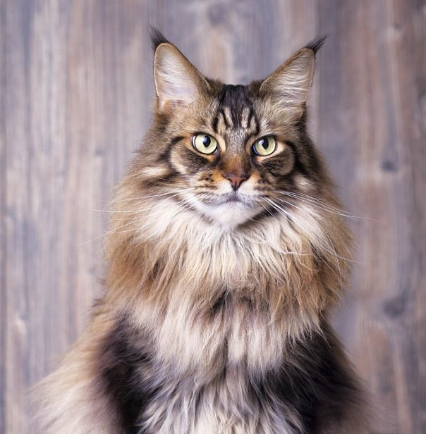
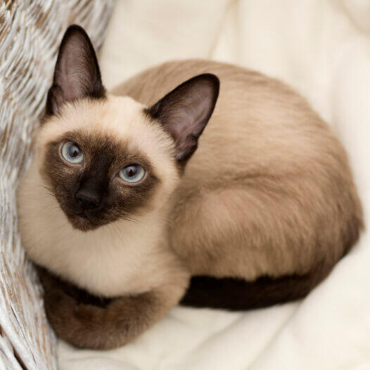
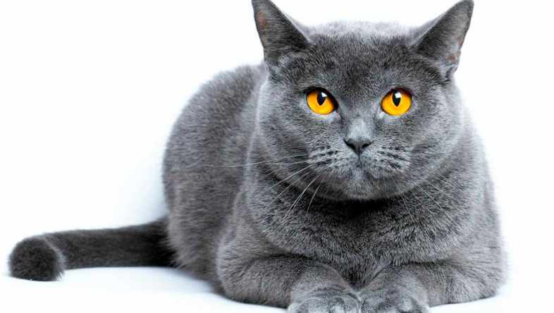
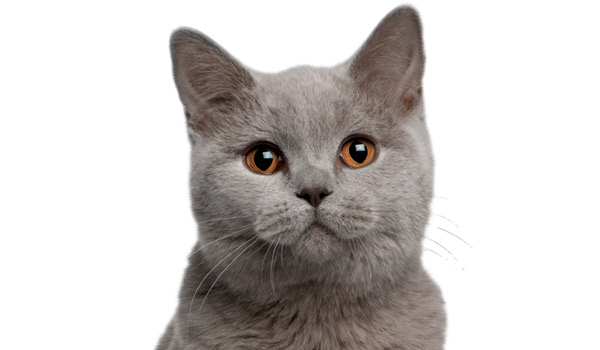
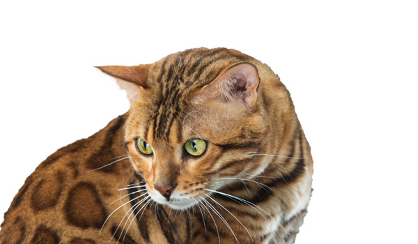
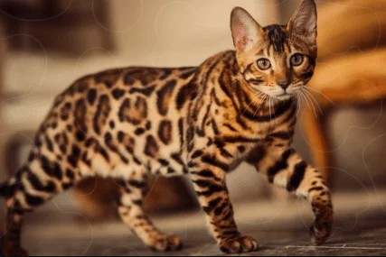

Originario del noreste de Estados Unidos, el Maine Coon ostenta el título de una de las razas domésticas más grandes del mundo. Su imponente presencia física —marcada por un pelaje denso e impermeable, orejas con pinceles estilo lince y una cola tupida pensada para resistir inviernos duros— contrasta por completo con su personalidad.
Lejos de resultar distante, es famoso por su carácter equilibrado, sociable y paciente. A menudo emite pequeños trinos y gorjeos en lugar de maullidos tradicionales, y convive con gran naturalidad con niños y otras mascotas.
Tarda hasta cuatro o cinco años en alcanzar su tamaño adulto definitivo, combinando la complexión de un cazador rústico con el temperamento de un compañero extremadamente leal.

El siamés clásico destaca por su silueta esbelta, sus llamativos ojos azul zafiro y su patrón colorpoint, donde las extremidades, cola, orejas y máscara facial presentan tonos más oscuros que el resto del cuerpo.
Proviene del antiguo reino de Siam (actual Tailandia), donde era venerado y custodiaba templos y palacios reales.
A nivel de comportamiento, es probablemente la raza más comunicativa y expresiva del mundo felino.
Posee una vocalización potente con la que reclama atención, describe su estado de ánimo o demanda juego.
Es sumamente curioso, aprende trucos de estimulación mental con facilidad y crea un vínculo muy estrecho con sus humanos, por lo que no tolera bien la soledad prolongada.

Con una historia ligada a los gatos que acompañaron a los romanos en las islas británicas, el British Shorthair destaca por su constitución robusta, pecho ancho y cabeza redondeada.
Su pelaje corto es extraordinariamente denso y afelpado, y aunque el tono azul (gris) es el más emblemático, existe en una amplia variedad de colores.
Es el arquetipo del gato tranquilo y autosuficiente. No exige atención constante ni suele tolerar que lo lleven en brazos durante mucho tiempo, pero disfruta enormemente de estar en la misma estancia acompañando a sus cuidadores.
Su naturaleza templada y bajo nivel de estrés lo convierten en una opción ideal para hogares urbanos y pisos tranquilos.


Surgido del cruce planificado entre el gato doméstico y el gato leopardo asiático (Prionailurus bengalensis), el bengalí conserva la estética exótica de la selva: un manto brillante con motas (rosetas) o patrones jaspeados y un brillo dorado muy característico (glitter).
Pese a su apariencia salvaje, es un animal doméstico cariñoso, aunque requiere cuidadores activos. Cuenta con un nivel de energía notablemente alto, pasión por saltar a puntos elevados y una inusual fascinación por el agua (no es raro verle curiosear en la ducha o el fregadero). Necesita enriquecimiento ambiental diario y juego constante para canalizar su dinamismo.

